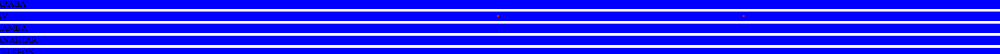
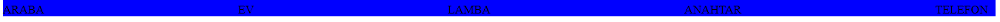
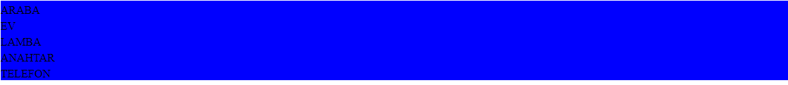
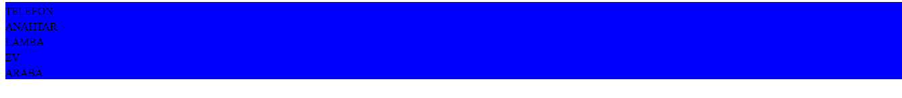

flex özelliği daha rahat bir ortamda web sitesi gelistirmemizi saglar. Daha özgür gelistirme yapabiliriz
bu örnekte flex özelliği olmadan div elementlerini görüyoruz wight 100% alır ve diğer elementler alt satıra alır.
ekran cıktısı alttadır.
Şimdide flex özelliğiyle inceliyelim
gördügünüz gibi yan yana dizdi
flex kullanarak yapabildiğimiz ayrıca hizzalama gibi özellikler var
başlıca özelliklere örnek vermek gerekirse
elemanları merkeze göre hizalar
başlangıca göre hizalar
bitişe göre hizalar
il ve son itemi yerlestirir , basşalangıç ve bitişe, daha sonrasında eşik mesafeyle itemleri yerleştirir
tüm itemlerler için esit aralık bırakır
özellikleri ve cıktılarını sırayla göstericem
yan yana satırda dizer
elementler tek tek satır kaplar diğer element alt satıra gecer
yansıması işlemi gibi rowdaki ilk elemanı satır sonuna alır ve sıralar
sutun olarak elementleri tersten yazar
